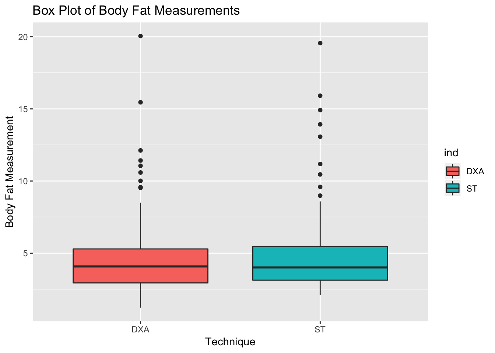
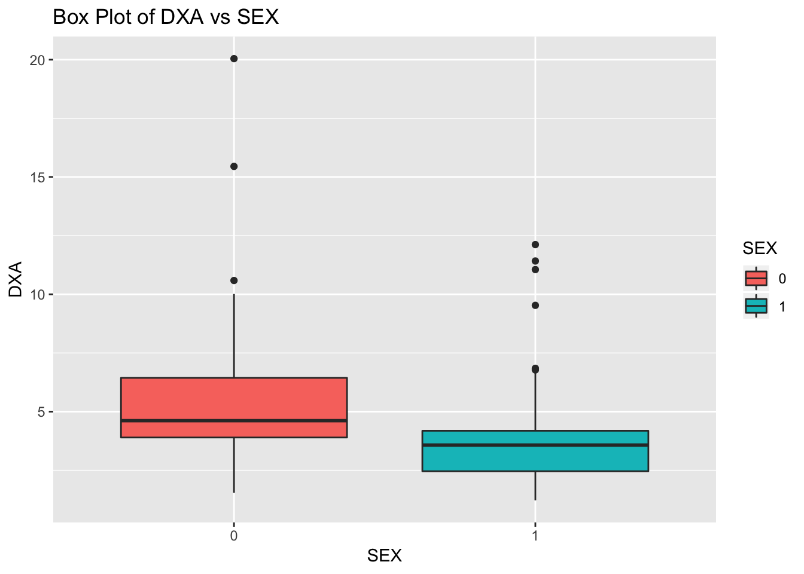
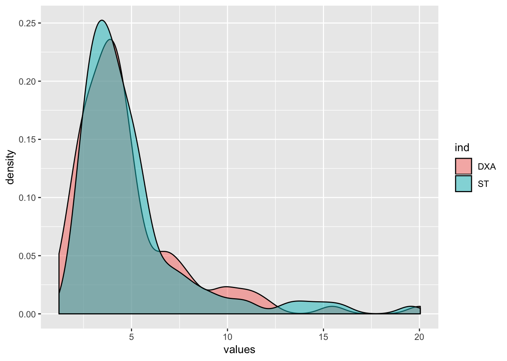
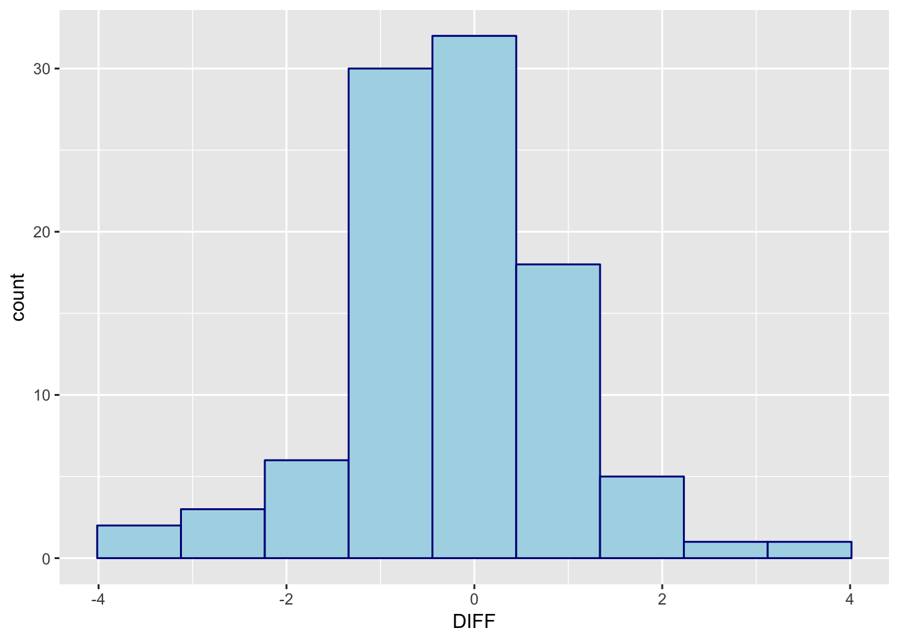
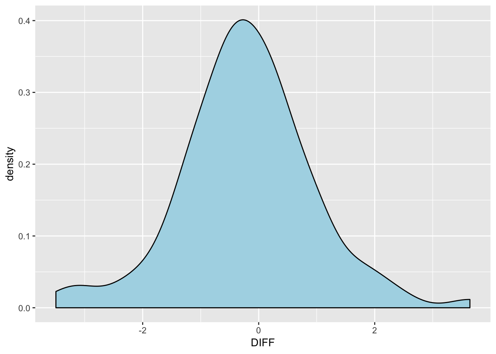
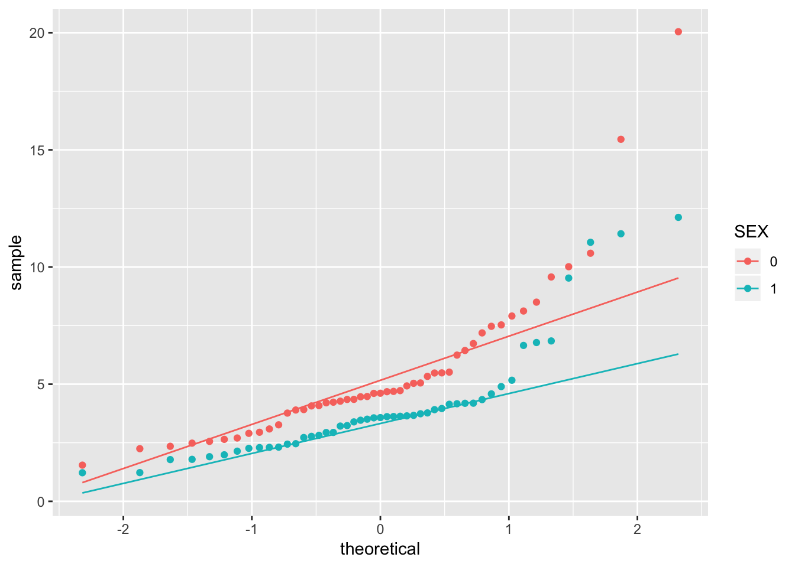
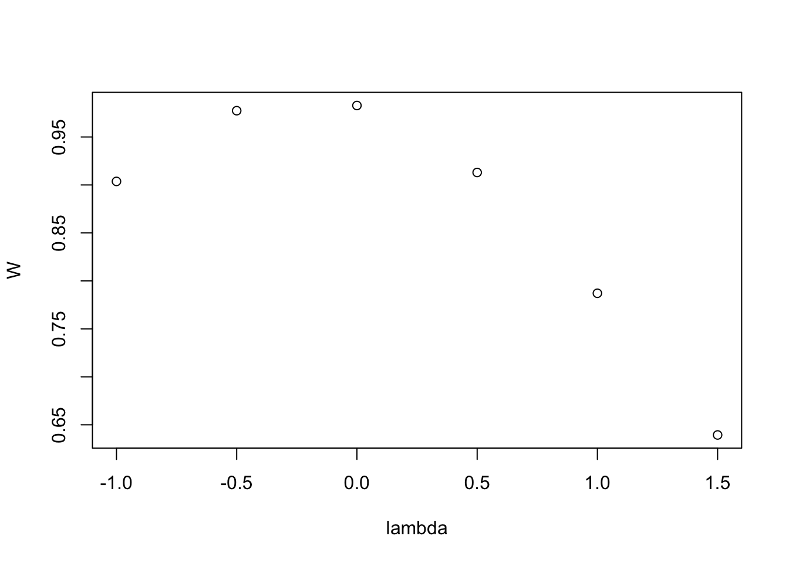
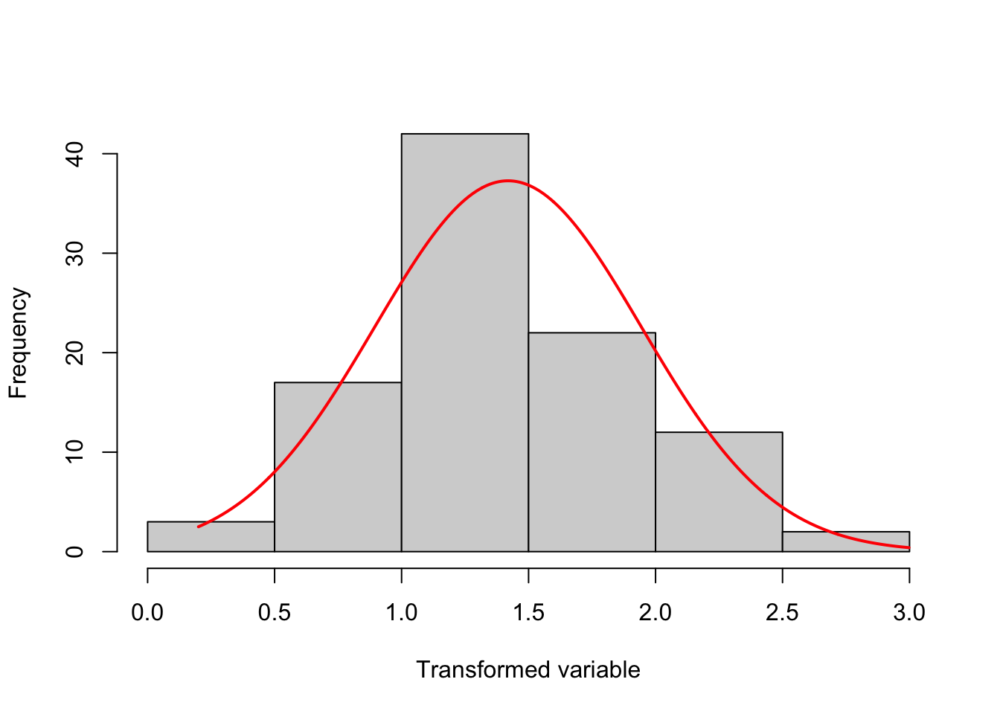
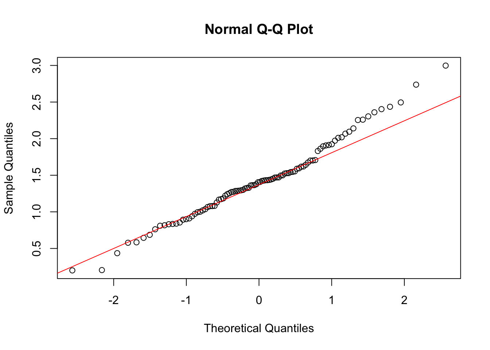

R Tutorial: t-Tests
Created by Aaron Coyner
Overview
This tutorial provides an introduction to t-tests. A study by Goran et.al (1996) examined the accuracy of some widely used body-composition techniques for children using three different methods: dual-energy X-ray absorptiometry (DXA) technique, skin-fold thickness, and bioelectric resistance. Subjects were children between 4 and 10 years old. Data were collected on 98 subjects (49 males and 49 females). One purpose of the study is to determine whether there is a difference in fat mass measurements using DXA (considered the gold standard method) compared to the skin-fold thickness method. We also wish to determine if DXA levels are significantly different between males and females.
Data sets and Rmarkdown files are available at: https://github.com/aaroncoyner/biostats-tutorials
Acknowledgements
This tutorial was adapted from Amber Lin's tutorials for PHPM 524: Introduction to Biostatistics at Oregon Health & Science University.
The template used for this tutorial is from Alison Presmanes-Hill
Setup
Install Packages
Do this once per machine.
install.packages('readr')
install.packages('skimr')
install.packages('dplyr')
install.packages('ggplot2')
install.packages('rcompanion')Load Packages
Do this once per R session.
library(readr)
library(skimr)
library(dplyr)
library(ggplot2)
library(rcompanion)Import Data
- Copy
body_comp.csvto an easily accessible location - Use
read_csv()from thereadrpackage to import the csv - The argument supplied to
read_csv()is the url or path to the data set - Finally, assign the data to an R object using
<-and call that object something simple likebody
body <- read_csv('data/body_comp.csv')Initial Data Analysis
Use the head() function in your console to briefly check the structure of the data set.
head(body)# A tibble: 6 x 4
DXA ST BR SEX
<dbl> <dbl> <dbl> <int>
1 3.65 4.55 4.26 1
2 3.92 2.82 6.09 0
3 7.53 3.89 5.12 0
4 6.24 5.49 8.04 0
5 10.6 10.5 14.2 0
6 9.58 11.2 12.4 0Red Flag: Does the number 1 for SEX represent males or females? This is a good example of when value labels should be used or a data dictionary should be included!
Also notice that below each column header is a description of the data type. <dbl> simply means that the column can take on any numeric value from \(-\infty\) to \(\infty\) and <int> indicates the same but for integers only. However, does it make sense for SEX to be able to take on more than 2 numbers given this data set? We can "tell" R that these are labels, rather than continuous variables by changing the data type to a factor.
body$SEX = as.factor(body$SEX)head() provides us with a brief overview of the structure of our data set. Let's use skim() to compute some summary statistics, such as the mean, standard deviation, and quartiles of each variable. We notice that the means of DXA and ST really aren't all that different, but we must determine this statistically.
skim(body)Skim summary statistics
n obs: 98
n variables: 4
── Variable type:factor ───────────────────────────────────────────
variable missing complete n n_unique top_counts ordered
SEX 0 98 98 2 0: 49, 1: 49, NA: 0 FALSE
── Variable type:numeric ──────────────────────────────────────────
variable missing complete n mean sd p0 p25 p50 p75 p100 hist
BR 1 97 98 5.66 3.44 1.24 3.67 4.65 6.54 21.74 ▆▇▂▁▁▁▁▁
DXA 0 98 98 4.78 3 1.22 2.94 4.08 5.29 20.04 ▇▇▂▁▁▁▁▁
ST 0 98 98 4.99 3.09 2.09 3.13 4.01 5.46 19.56 ▇▃▁▁▁▁▁▁Visualization
Box Plots
We first need to stack our data so that we can create plots out of it. Then, since we are only interested in the DXA and ST variables, we filter by them. Finally, we pass the new data set to ggplot() and create a box plot. Upon comparison, it doesn't appear that the distributions are that different from one another.
body %>%
stack() %>%
filter(ind == 'DXA' | ind == 'ST') %>%
ggplot(aes(x = ind, y = values, fill = ind)) +
geom_boxplot() +
ggtitle('Box Plot of Body Fat Measurements') +
xlab('Technique') +
ylab('Body Fat Measurement')
We can perform the same analysis for DXA measurements by SEX.
ggplot(body, aes(x = SEX, y = DXA, fill = SEX)) +
geom_boxplot() +
ggtitle('Box Plot of DXA vs SEX') +
xlab('SEX') +
ylab('DXA')
Density Plots
Even density plots of our data suggest that these two techniques produce similar measurements. HOWEVER, note that these distributions are not normal!
body %>%
stack() %>%
filter(ind == 'DXA' | ind == 'ST') %>%
ggplot(aes(x = values, fill = ind)) +
geom_density(alpha = 0.5)
Again, we can perform the same analysis for DXA measurements by SEX.
ggplot(body, aes(x = DXA, group = SEX, fill = SEX)) +
geom_density(alpha = 0.5)
t-Tests
Single-sample
HYPOTHESIS: There is a difference in fat mass measurements between DXA and the skin-fold thickness method.
To conduct the analysis, we first need to generate a variable that describes the difference between DXA and ST. After, we'll can examine our tibble once more just to make sure everything worked as expected.
body = body %>%
mutate(DIFF = DXA - ST)
head(body)# A tibble: 6 x 5
DXA ST BR SEX DIFF
<dbl> <dbl> <dbl> <fct> <dbl>
1 3.65 4.55 4.26 1 -0.904
2 3.92 2.82 6.09 0 1.09
3 7.53 3.89 5.12 0 3.64
4 6.24 5.49 8.04 0 0.750
5 10.6 10.5 14.2 0 0.134
6 9.58 11.2 12.4 0 -1.60 Let's check whether the variable DIFF is normally distributed. We'll do this via histograms and density plots.
ggplot(body, aes(x=DIFF)) +
geom_histogram(bins=9, color="darkblue", fill="lightblue")
ggplot(body, aes(x=DIFF)) +
geom_density(fill="lightblue")
DIFF sure does look normally distributed. This indicates that we can conduct a one sample t-test using it.
We'll now test whether DIFF is significantly different from 0, which is a round-about way of determining whether DXA is significantly different from ST.
t.test(body$DIFF, mu=0)
One Sample t-test
data: body$DIFF
t = -1.785, df = 97, p-value = 0.07739
alternative hypothesis: true mean is not equal to 0
95 percent confidence interval:
-0.43787678 0.02320127
sample estimates:
mean of x
-0.2073378 From the output, we can see that the mean of DIFF for this sample is -0.2073378. The 95% confidence interval tells us that the mean of DIFF is likely to fall between -0.4378768 and 0.0232013. The p-value of 0.0773901 tells us that if the mean were 0, the probability of selecting a sample with a mean equal to this one would be approximately 7.74%.
Since the p-value is not less than the significance level of 0.05, we cannot reject the null hypothesis that the mean is equal to 0. This means that there is no evidence that the difference between DXA and ST is significant.
Paired
HYPOTHESIS: There is a difference in fat mass measurements between DXA and the skin-fold thickness method.
Remember, when we are unsure of the arguments we should pass to a function in R, we can use the ? to open a help page (e.g. ?t.test). We see that to perform a paired t-test, we must set paired equal to TRUE. Our results suggest that there is no difference between the two techniques!
t.test(body$DXA, body$ST, paired=TRUE)
Paired t-test
data: body$DXA and body$ST
t = -1.785, df = 97, p-value = 0.07739
alternative hypothesis: true difference in means is not equal to 0
95 percent confidence interval:
-0.43787678 0.02320127
sample estimates:
mean of the differences
-0.2073378 Note: this is equivalent to a one sample t-test comparing DIFF to a population mean of 0.
HYPOTHESIS: There is a difference in DXA fat mass measurements between males and females.
Before we conduct our second hypothesis test, do you remember the density plots we generated earlier? They suggested that our data did not come from a normal distribution. Let's look at some Q-Q plots to confirm this.
ggplot(body, aes(sample=DXA, group=SEX, color=SEX)) +
geom_qq() +
geom_qq_line()
It's pretty easy to see that neither SEX == 0 nor SEX == 1 fall on a straight line, suggesting that DXA is not normally distributed. However, we can get around this.
We will transform DXA by conducting Tukey's Ladder of Powers to produce a more-normally distributed vector of values. As we can see from the histogram and Q-Q plot, DXA now appears to be normally distributed.
transformTukey(body$DXA, plotit=TRUE, start=-1, end=2, int=0.5)
lambda W Shapiro.p.value
3 0 0.9828 0.2284
if (lambda > 0){TRANS = x ^ lambda}
if (lambda == 0){TRANS = log(x)}
if (lambda < 0){TRANS = -1 * x ^ lambda} 
[1] 1.2942613 1.3654282 2.0189216 1.8312526 2.3598252 2.2592182 0.8929812
[8] 1.2708555 0.2045722 0.8167797 0.9004459 1.4077378 1.4315067 1.0202543
[15] 1.4984617 1.4428873 1.0816696 1.0656413 1.7016706 1.2851472 1.6741577
[22] 1.1737507 1.7007218 1.5279458 1.0364177 1.4269323 1.3186577 1.5889086
[29] 1.3644577 2.4948240 2.7377320 2.9978999 2.2544447 1.0022482 1.3604893
[36] 1.5947506 1.2740491 1.9137263 1.1836578 0.4354769 0.7618800 1.4325575
[43] 0.6862736 1.2213018 0.8391073 0.6451117 1.3282414 0.8545004 1.5432340
[50] 1.5530792 1.4527607 0.9731246 0.9948431 1.5292685 1.1280416 1.6200415
[57] 1.9236791 2.4029190 1.4958212 0.9101117 2.0109352 2.1403014 1.8952482
[64] 1.4708193 1.2895632 1.5230736 0.8306457 1.2865845 0.8347335 1.4684502
[71] 1.4042816 0.5837786 1.4213719 1.7073991 1.1670183 1.6426212 1.3766227
[78] 1.3001372 1.4700149 1.0789876 1.6170092 2.0680646 0.5778486 1.2419331
[85] 2.4354012 0.2001615 1.0775589 1.5460933 2.0946626 2.3040041 0.9399291
[92] 1.3262524 1.4364883 1.9071693 1.2547895 0.8101744 1.9725660 1.8623732So, what have we done here? First, we have tested various values of \(\lambda\) ranging from -1 to 2 at intervals of 0.5. When \(\lambda < 0\), we transform our data via \(-1 * x ^ \lambda\), when \(\lambda = 0\), we transform our data via \(log(x)\), and when \(\lambda > 0\), we transform our data via \(x ^ \lambda\). This configuration tests the following transforms: \(-1/x, -1/\sqrt(x), log(x), \sqrt(x), x,~and~x^2\).
The output of this function tells us that method 3, where \(\lambda = 0\), maximizes the Shapiro-Wilks W statistic. In English, this means that a log-transform of this vector will produce a more-normal distribution.
We can log transform DXA into a log base 2, log base 3, or log base 10 variable. For ease of interpretation it is not recommended that we use natural log. Here we will transform it into a log base 2 variable.
body$log2_DXA <- log2(body$DXA)Now that we've morphed our data to meet the assumptions of our test, we can now conduct a 2-sample t-test. But before we do that, we must assess whether or not the variances of each group are equal. If we look at the standard deviations of the log-transformed DXA for the two genders, they are pretty equal.
sd(body$log2_DXA[body$SEX == 0])[1] 0.7151531sd(body$log2_DXA[body$SEX == 1])[1] 0.7322937Therefore, we can use a t-test where we treat the two variances as being equal.
t.test(log2_DXA ~ SEX, data=body, var.equal=TRUE)
Two Sample t-test
data: log2_DXA by SEX
t = 3.1605, df = 96, p-value = 0.002108
alternative hypothesis: true difference in means is not equal to 0
95 percent confidence interval:
0.1718829 0.7523894
sample estimates:
mean in group 0 mean in group 1
2.278543 1.816407 It appears that the log-transformed mean DXA levels are significantly different for males versus females (\(p=0.002108\)).
Unequal Variances
HYPOTHESIS: There is a difference in DXA fat mass measurements between males and females.
So, a t-test with equal variance is fine, but let us run through a t-test with unequal variances to illustrate how to use software to conduct that test. R’s default t-test uses the unequal variance assumption. So, if we’d like to conduct a t-test with unequal variances, we actually don't have to supply a value for the var.equal argument at all.
t.test(log2_DXA ~ SEX, data = body)
Welch Two Sample t-test
data: log2_DXA by SEX
t = 3.1605, df = 95.946, p-value = 0.002108
alternative hypothesis: true difference in means is not equal to 0
95 percent confidence interval:
0.1718808 0.7523914
sample estimates:
mean in group 0 mean in group 1
2.278543 1.816407 The conclusion doesn’t change, but notice that the degrees of freedom for a t-test with unequal variances are calculated using the Welch (or Satterthwaite) formula.
© 2018 Aaron Coyner. All rights reserved.